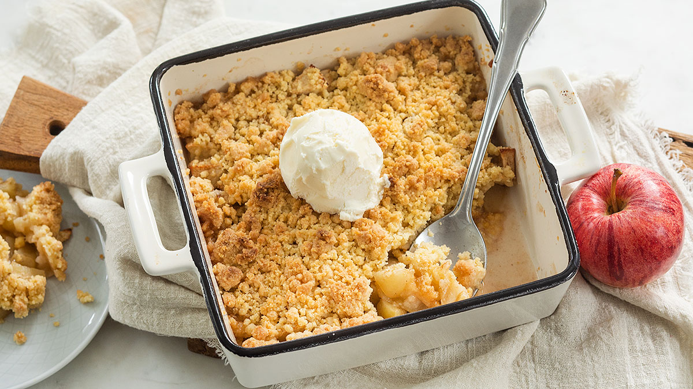

Appelkruimel
Een heerlijk toetje van appel met kruimel, heel simpel om te maken in 15 minuten en lekker met een bolletje ijs of slagroom.
terug naar homepagina

benodigdheden:
voor 4 personen
- 400 gram appels
- 1 theelepel kaneel
- 2 theelepels suiker
- 1 theelepel maizena
- 75 gram suiker
- 150 gram bloem
- 90 gram margarine
- snuf zout
Bereidingswijze:
- Verwarm de oven voor op 200° graden.
- Doe de appelstukjes in een kom en voeg de maïzena, kaneel en suiker toe en roer erdoor.
- Doe de bloem, zout en suiker in een kom. Voeg hier de koude boter in stukjes aan toe.
Meng dit met je vingers door elkaar tot een kruimelig deeg.
- Vet de ovenschaal in met een beetje extra boter.
- Doe het appelmengsel in de ovenschaal en verdeel de deegkruimels er over.
- Bak de appel crumble ca. 25 min in de oven tot hij goudbruin is.
- Serveer het warm of koud.
- Tips: Lekker met een bol ijs of slagroom.
- Meng ook eens wat noten door de crumble laag.
- Voor deze appel crumble gebruik je het liefst een zoetzure appel zoals bijvoorbeeld een jonagold,
elstar of een goudrenet (als ze in het seizoen zijn).
auteur: Mark Bos
datum: 14/11/2022